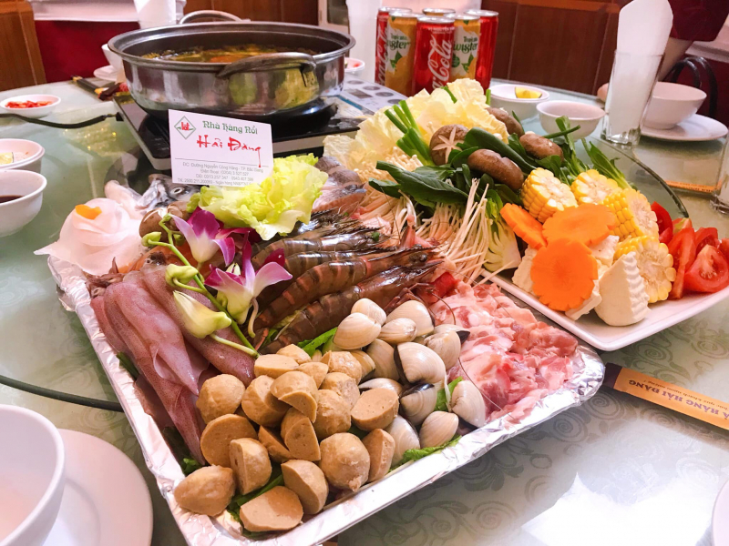
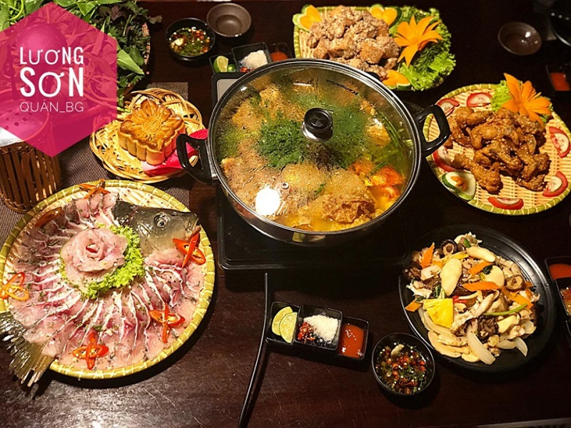
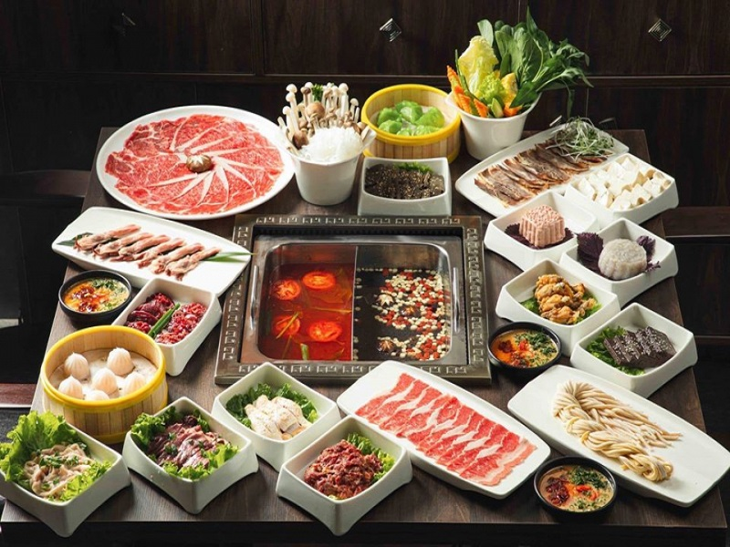
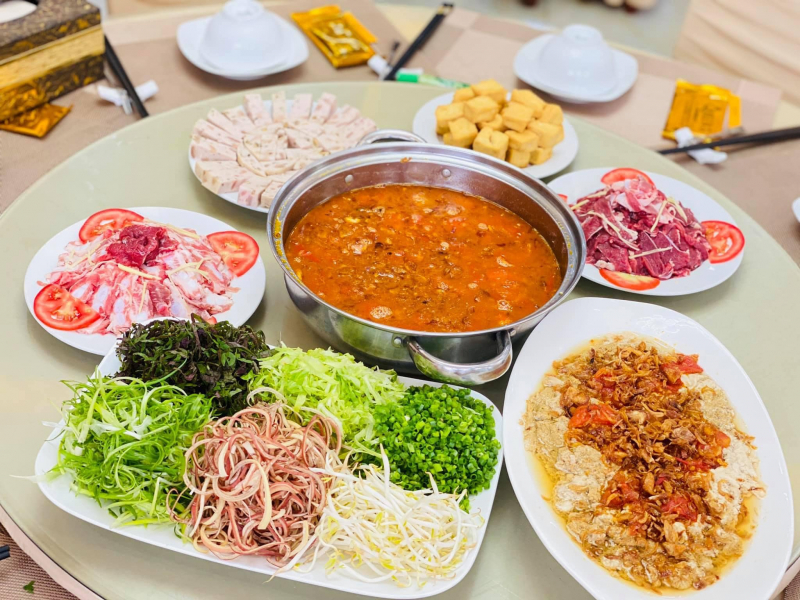
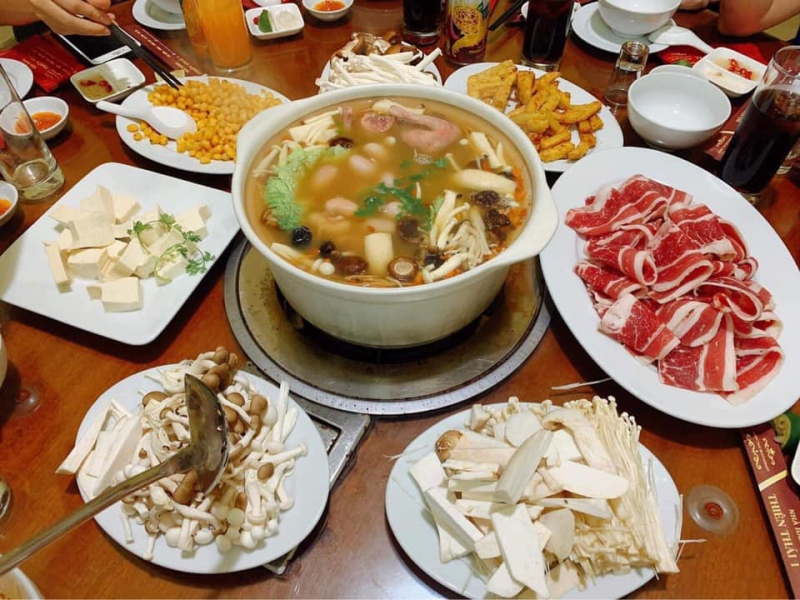
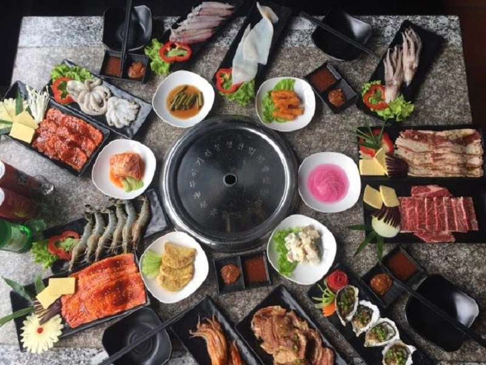
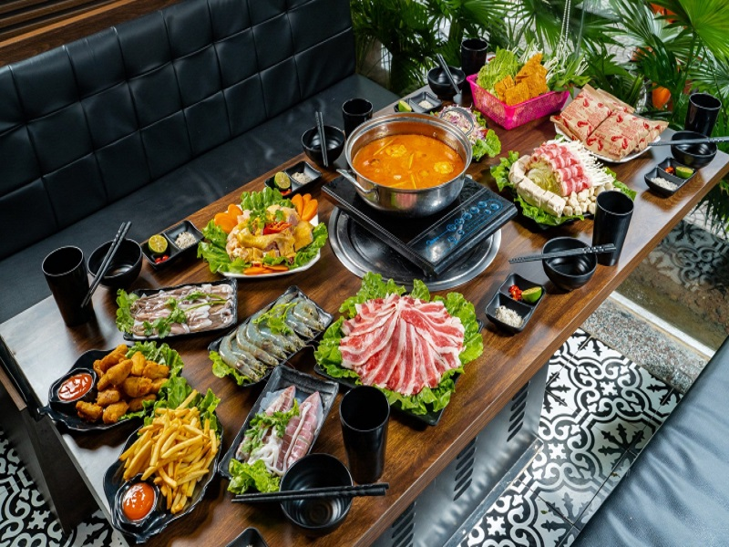

Top 10 nhà hàng nổi tiếng ở Bắc Giang


1. Nhà hàng Rùa Vàng
Bạn là một người muốn trải nghiệm ẩm thực đa dạng? Bạn mong muốn tìm được những món ăn ngon, độc đáo? Vậy đừng ngại mà tham khảo Nhà hàng Rùa Vàng, một trong những nhà hàng lớn nhất Bắc Giang.
Nhà hàng luôn đề cao vấn đề an toàn thực phẩm, các thực đơn phong phú mỗi bữa. Đến với nhà hàng bạn có thể thưởng thức được món ăn ba miền Việt Nam, món ăn Á – Âu hay các món Trung Hoa, buffet lẩu.
Không gian nhà hàng tạo sự thoải mái, ấm cúng mà vẫn lịch sự, sang trọng. Thái độ nhân viên được đào tạo chuyên nghiệp. Vậy với chất lượng mà chuỗi nhà hàng Rùa Vàng mang lại thì bạn không cần phải lo lắng cho bữa ăn của mình.
Thông tin liên hệ
| Địa chỉ | Số 3,dường Hùng Vương 1,phường Lê Lợi,thành phố Bắc Giang |
|---|---|
| Giờ mở cửa | 6:30 - 22:00 |
| Hotline | 0204 3825 868 - 0974 91 7722 |
| Website | https://nhahangruavang.com/menu-nha-hang-rua-vang/ |
2. Nhà Hàng Paris Restaurant
Nhà hàng Paris Restaurant là một trong những nhà hàng nổi tiếng nhất tại Bắc Giang. Đây là một trong những nhà hàng Âu - Á với không gian sang trọng, tinh tế và trang nhã.

Thông tin liên hệ
| Địa chỉ | Số 24/50, đường Nguyễn Thị Lưu, Phường Ngô Quyền, Bắc Giang |
|---|---|
| Giờ mở cửa | 09:00 - 21:00 |
| Hotline | 02043 555 925 |
| Website | --- |
3. Nhà hàng Nổi Hải Đăng
Nhà hàng nổi Hải Đăng đã và đang là một địa chỉ quen thuộc với không những người dân Bắc Giang mà còn đối với những du khách đặt chân tới đây. Nhà hàng nổi Hải Đăng được tọa lạc trên mặt hồ Làng Thương rộng rãi, thơ mộng, thoáng mát và hữu tình, có sức chứa 500 người, bao gồm 12 phòng ăn riêng biệt và một nhà ăn lớn. Với không gian rộng rãi, thoáng mát khi đến với Nhà hàng nổi Hải Đăng, thực khách sẽ được đón tiếp chu đáo, lịch sự bởi đội ngũ nhân viên nhiệt tình, năng động. Phong cách phục vụ chuyên nghiệp cùng các dịch vụ sẽ làm hài lòng phần lớn các quý khách. Điểm cộng cho Nhà hàng nổi Hải Đăng là đội ngũ đầu bếp chuyên nghiệp, giàu kinh nghiệm, chế biến từ những nguyên liệu tươi ngon nhất hơn hết là luôn đảm bảo vệ sinh an toàn thực phẩm với mức chi phí hợp lý nhất.
Thông tin liên hệ
| Địa chỉ | hồ Thùng Đấu, Đường Nguyễn Công Hãng, TP. Bắc Giang, Bắc Giang |
|---|---|
| Giờ mở cửa | 08:00 – 22:00 |
| Hotline | 0915066069 - 02043527527 |
| Website | --- |
4. Lương Sơn Quán
Đồ ăn ở Lương Sơn Quán thì rất phong phú, từ những món ăn đồng quê, các loại lẩu như lẩu hải sản, lẩu ếch, lẩu cá… đều đủ và được chế biến đa dạng, ngon, chất lượng. Đây là một những quán lẩu đông khách nhất Bắc Giang. Nhanh chân đến ngay Lương Sơn quán để được thưởng thức nhiều món ăn ngon, checkin vô vàn góc sống ảo cực đẹp. Hơn nữa còn rất nhiều ưu đãi vẫn đang chờ đón các bạn đó ạ.
Thông tin liên hệ
| Địa chỉ | 193-195 Hoàng Văn Thụ, TP. Bắc Giang, Bắc Giang |
|---|---|
| Giờ mở cửa | 08:30 - 23:000 |
| Hotline | 02043.6666.99 |
| Website | --- |
5. Hipot - Paradise Bufet Lẩu & Dimsum
Menu chất lừ của Hipot - Paradise Buffet Lẩu & Dimsum hội tụ hơn 100 món ngon trứ danh như lẩu Trung Hoa, dimsum, salad đặc biệt, thịt bò và hải sản thượng hạng ,... Món nào cũng tươi roi rói, thơm ngon đem đến hành trình trải nghiệm vị giác đầy thú vị. Đặc biệt sau khi thưởng thức món lẩu chuẩn vị Trung Hoa, các tín đồ ẩm thực còn có thể nếm thử các món ăn nhẹ hấp dẫn như bánh bao kim sa, há cảo chua cay, sủi cảo Hipot, xíu mại, nước ép hoa quả tươi... Hipot - Paradise Buffet Lẩu & Dimsum thực sự là một địa điểm không thể bỏ qua với những ai muốn trải nghiệm một chút văn hóa ẩm thực Trung Quốc. Đội ngũ nhân viên tại Hipot - Paradise Buffet Lẩu & Dimsum được đào tạo chuyên nghiệp, có phong cách phục vụ chu đáo và tận tình. Đảm bảo đến Hipot - Paradise Buffet Lẩu & Dimsum là nhớ mãi!
Thông tin liên hệ
| Địa chỉ | Số 1A Nguyễn Thị Lưu 1, P. Trần Thú, TP. Bắc Giang, Bắc Giang |
|---|---|
| Giờ mở cửa | 11:00 - 14:00 và 17:00 - 22:00 |
| Hotline | 0204.352.3333 - 0985.138.818 |
| Website | --- |
6. Sogabil Bắc GIang
Sogabil Bắc Giang là nhà hàng thương hiệu BBQ Buffet Nướng và Lẩu không khói nức danh trên khắp châu Á và hiện giờ đang có mặt tại Thành phố Bắc Giang. Nhiều người hâm mộ địa điểm này chính bởi không gian thoáng đãng, không bị ám mùi vào áo quần giúp bạn tự tin đi chơi thoải mái sau bữa ăn. Đến đây bạn sẽ được thưởng thức vô vàn món ngon chuẩn Hàn trên quầy line, ngập tràn panchan thay đổi theo ngày, đắm chìm trong những món tráng miệng thanh mát - tốt cho sức khỏe và đặc biệt nhất là vị thịt nướng không thể chê của Sogabil Bắc Giang. Với thời tiết mùa hè nóng nực như hiện nay thì chúng ta thường ngại đi ăn lẩu vì sức nóng của nó. Tuy nhiên, khi đến với nhà hàng Sogabil Bắc Giang thì thời tiết không phải là nỗi lo bởi nhà hàng có hệ thống máy lạnh mát rượi bất chấp nhiệt độ bên ngoài ra sao.
Thông tin liên hệ
| Địa chỉ | Số 2 đường Ngô Gia Tự, phường Trần Phú, TP. Bắc Giang, Bắc Giang |
|---|---|
| Giờ mở cửa | 11:00 - 14:00, 17:30 - 22:30 |
| Hotline | 0916102070 - 0816056655 |
| Website | http://www.thebbqhouse.com.vn/ |
7. Lẩu Nấm Thiên Thái
Thực khách đến với Lẩu nấm Thiên Thái sẽ vô cùng ấn tượng với vị nước lẩu độc đáo từ xương ống ninh lâu cùng thảo quả dinh dưỡng: Ngon, ngọt tự nhiên. Các món nhúng cũng rất đa dạng và được chọn lựa, chế biến kỹ càng như thịt bò, gà ác, chim câu, rau xanh,... Đặc biệt nấm tại Lẩu nấm Thiên Thái lúc nào cũng được phục vụ đầy ắp, ăn ngọt và rất bổ dưỡng. Nhúng sương sương dăm đĩa thịt bò và nhiều loại Nấm khác nhau cùng vô số món khai vị cũng đủ khiến người ta phải quay lại nhiều lần.
Thông tin liên hệ
| Địa chỉ | 342-344 Nguyễn Thị Lưu 2, TP. Bắc Giang, Bắc Giang |
|---|---|
| Giờ mở cửa | 08:00 - 23:00 |
| Hotline | 0204 3551 976 |
| Website | --- |
8. Nhà hàng HÀ Linh
Đặc sản của Nhà hàng Hà Linh là món Lẩu cua gạch bầu ngon quên lối về. Gọi là lẩu cua gạch bầu bởi đây là sự kết hợp trên cả tuyệt vời giữa cua gạch son, thịt chắc với vị ngọt thanh thanh của bầu, kèm theo nhiều loại rau xanh và tươi như mướp, mồng tơi không chỉ kích thích vị giác mà còn là món giải nhiệt cơ thể và cung cấp đủ năng lượng, vitamin, canxi cho những ngày hè nóng nực đã qua. Nước lẩu thì được chế biến vô cùng công phu từ tôm nõn khô và hành củ cùng các gia vị tự nhiên nên rất ngon và đậm đà.

Thông tin liên hệ
| Địa chỉ | 328 Nguyễn Thị Lưu, TP. Bắc Giang, Bắc Giang |
|---|---|
| Giờ mở cửa | 6:30 - 22:00 |
| Hotline | 098 650 18 68 |
| Website | --- |
9. Jumong BBQ
Jumong BBQ thuộc top quán buffet lẩu nướng tương đối ngon tại TP Bắc Giang. Đến với Jumong BBQ, thực khách sẽ được thưởng thức một bữa đại tiệc ngập tràn thịt thơm, ngon, bổ dưỡng với đa dạng các món nhúng lẩu hoặc các món nướng với giá rất sinh viên và không gian cực thoáng sạch. Một số món nhúng lẩu tại nhà hàng gồm: bò úc nhập khẩu, sụn non, gà cuộn, giò viên, váng đậu, mỳ , rau tổng hợp, đậu hũ và hải sản tươi ngon (tôm, mực, bạch tuộc). Buffet nướng cũng bao gồm gần 30 món heo, bò, gà, hải sản cho quý khách thỏa sức lựa chọn. Nguyên liệu nhập khẩu tươi sạch để trong ngày, gia vị hảo hạng, đảm bảo 100% Vệ sinh An toàn Thực Phẩm. Đây sẽ là một trong những nơi lý tưởng để tổ chức những bữa tiệc liên hoan, gặp mặt, hò hẹn bạn bè, người thân và thưởng thức vô cùng trọn vẹn.
Thông tin liên hệ
| Địa chỉ | 273 Nguyễn Thị Lưu 2, Ngô Quyền, TP. Bắc Giang, Bắc Giang |
|---|---|
| Giờ mở cửa | 6:30 - 22:00 |
| Hotline | 0983.347.670 - 0911.640.268 |
| Website | --- |
10. Queen Restaurant
Thực đơn món ăn tại Queens Restaurant hết sức đa dạng. Khách hàng có thể yêu cầu đủ loại món ăn từ những món đặc sản vùng núi đến các loại hải sản như tôm hùm bông, tôm Alaska, cua Cà Mau,… Các món ăn tại đây được chế biến đúng vị, đậm đà và được nhận xét là rất hợp khẩu vị của nhiều khách hàng. Ngoài ra thì món Tropical Sashimi - 7 mỹ vị trong một món ăn gồm: Cá hồi, bào Ngư, Tôm sú, Trứng cá trích 3 vị, Hàu cũng ngon không kém, được rất nhiều thực khách lựa chọn. Nói chung món nào cũng lạ mà lại ngon.
Thông tin liên hệ
| Địa chỉ | Lô 1-10 đường Nguyễn Doãn Địch, khu dân cư 3(sau chợ Cầu Chui), TP. Bắc Giang |
|---|---|
| Giờ mở cửa | 8:30 – 22:30 |
| Hotline | 091217.2662 - 02043558899 |
| Website | --- |